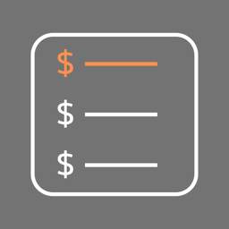

SubSmart は、増え続けるサブスクリプションと固定費をシンプルに管理するアプリです。支払い総額の見える化や解約シミュレーションで、節約の判断をサポートします。
ホーム画面・ロック画面のウィジェット、CSVエクスポート、パスコード・Face ID によるロックにも対応しています。
不具合のご報告・ご要望・ご質問は、下記メールアドレスまでお気軽にご連絡ください。
app.info.kn@gmail.com
よくある質問: